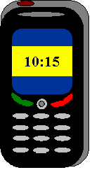

|

|
Tömeg: 100 gramm
Méret: 102 x 44 x 19 mm
Beszélgetési idő: 210-800 perc
Készenléti idő: 150-300 óra
Készülék-szolgáltatások
Grafikus, 65K színmélységű kijelző (128x160 pixel)
MMS küldése és fogadása
Képernyőkímélő üzemmód
GPRS adatátvitel
Vonalkapcsolt adatátvitel
Kapcsolat PC-vel adatkábelen, infrán és Bluetooth-on keresztül
WAP funkció
510 nevet és telefonszámot kezelő készülékmemória
70 SMS tárolására alkalmas készülékmemória
Névhez rendelhető csengőhang
Utoljára hívott - fogadott - nem fogadott telefonszámok listája
5 gyári játék
11 többszólamú és 14 egyszólamú gyári csengőhang
Rezgéses hívásjelzés
|